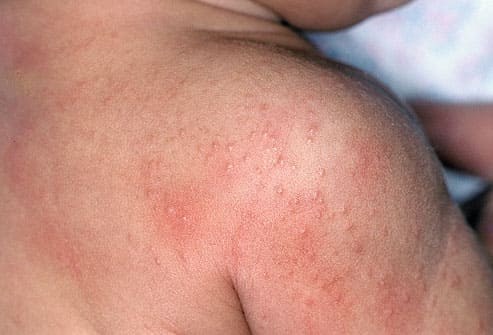
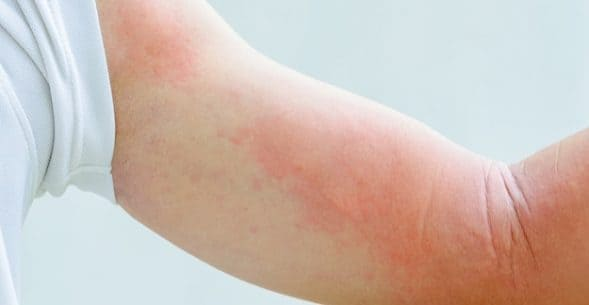

Климатический гипергидроз («красная потница») часто возникает в жаркое и душное время года. Младенцы и дети в большей степени подвержены этой болезни, чем взрослые. Потница развивается в результате закупорки потовых желез кожи. У детей часто можно видеть потницу, когда они возвращаются с каникул, проведенных в жаркой и/или влажной местности. Сочетание жары, пота, бактерий и клеток кожи может способствовать закупорке потовых желез, что ведет к местному покраснению, воспалению и раздражению.
КАК РАСПОЗНАТЬ
Признаки того, что это тепловая сыпь:
• маленькие красные точки, похожие на крошечные волдыри, могут появиться на любом участке тела. Сыпь при климатическом гипергидрозе чаще всего возникает на участках, покрытых одеждой, например на плечах, спине, туловище, ягодицах и бедрах;
ЧТО ДЕЛАТЬ
Хорошая новость — практически всегда потница проходит примерно в течение недели. Иногда, если ребенок долго остается в жарких и влажных условиях, она может задержаться. Обратитесь к врачу, если вы замечаете ухудшение состояния вместо улучшения.

СОВЕТ ДОКТОРОВ СИРС: ПРОВЕТРИВАЙТЕ СЫПЬ Старайтесь держать пораженный участок кожи в сухости. Может помочь присыпка из кукурузного крахмала; он впитывает избыточную влагу и не дает сыпи усугубиться. |
Здоровье ребенка от докторов Сирс / Сирс У. и